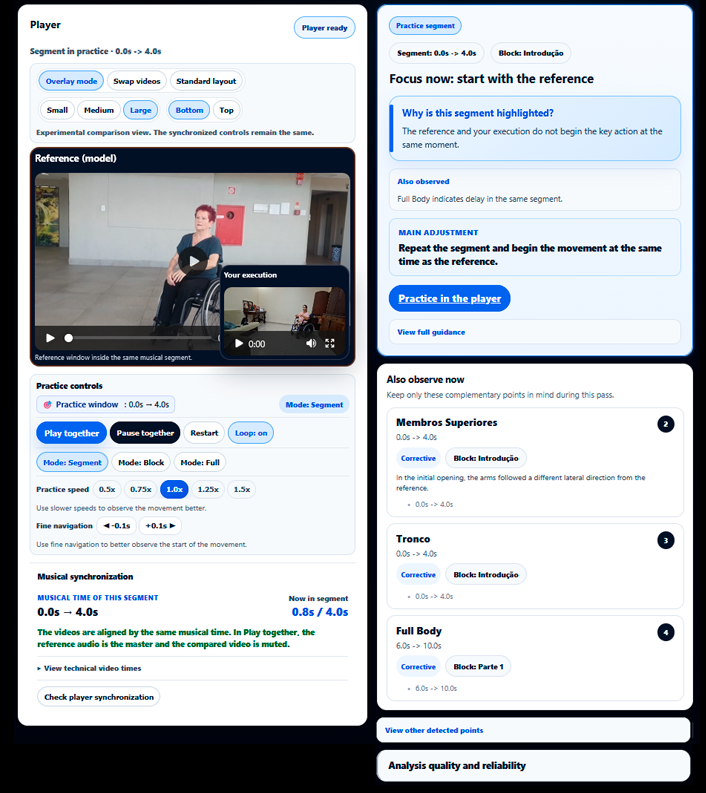

MTS4Dance Motion Tracking System for Dance
MTS4Dance is an applied research initiative dedicated to developing technological approaches that support pedagogical movement analysis, performance comparison and formative feedback in dance education contexts.
The project places particular emphasis on wheelchair dance, inclusive dance practices and accessibility, while exploring how movement data can support meaningful reflection in teaching and learning processes.
Rather than simply producing technical measurements, MTS4Dance seeks to translate movement-related information into pedagogically relevant insights for real educational settings.
Overview
Project structure
Platform in Action
From pedagogical design to guided practice and analytical feedback
This section shows how the platform supports design, guided practice, and analysis.
Selected MTS4Dance interfaces illustrate how the platform supports movement observation, pedagogical interpretation and guided practice in dance education contexts.
MTS4Dance connects pedagogical design, movement execution and analytical feedback into a continuous learning cycle.

Teacher-centered pedagogical configuration
Teachers design structured learning scenarios by defining movement groups, organizing musical segments, and controlling how practices are delivered to learners.
- Pedagogical control
- Structured scenarios
- Learning design

Segment-based practice guidance
The Practice Panel transforms movement analysis into structured practice guidance. Learners compare their execution with a reference performance through synchronized musical segments, targeted feedback and repeatable practice controls designed to support movement refinement.
- Musical-segment synchronization
- Guided comparison with reference performance
- Targeted movement feedback
- Repeatable and controlled practice

Comparative analysis and pedagogical reporting
The Formative Report combines performance indicators with pedagogical interpretation and practice-based evidence, helping connect analytical results with learner engagement and performance development.
- Structured interpretation
- Performance indicators
- Practice-based evidence